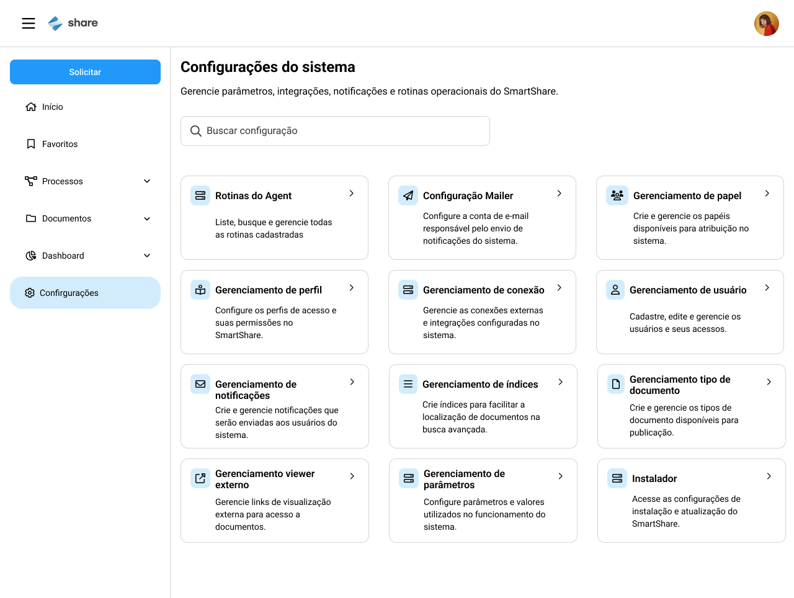
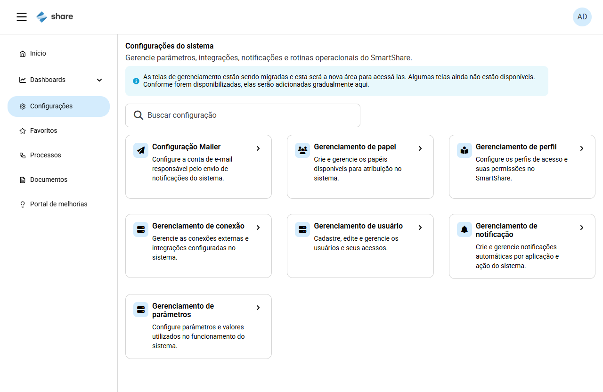
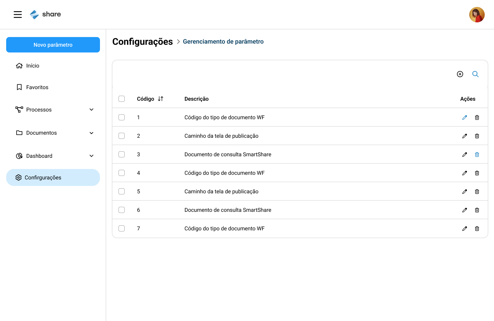
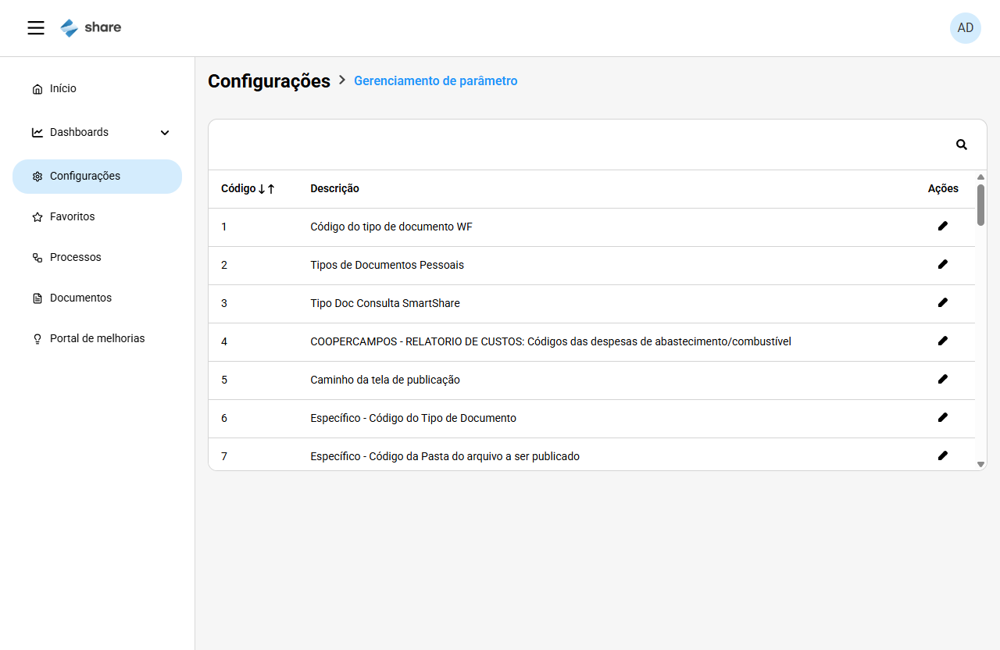
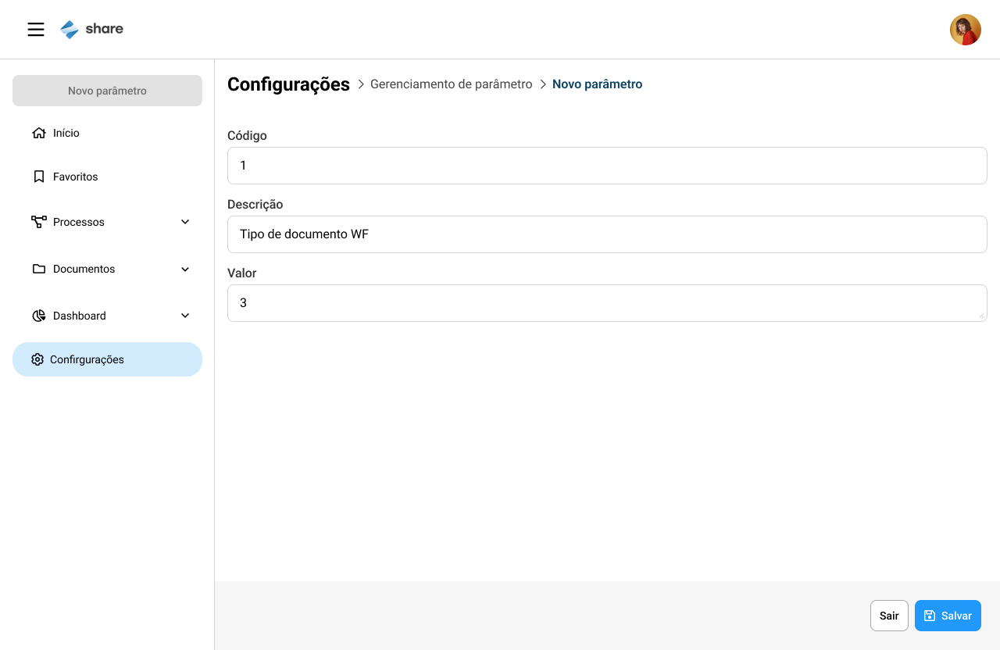
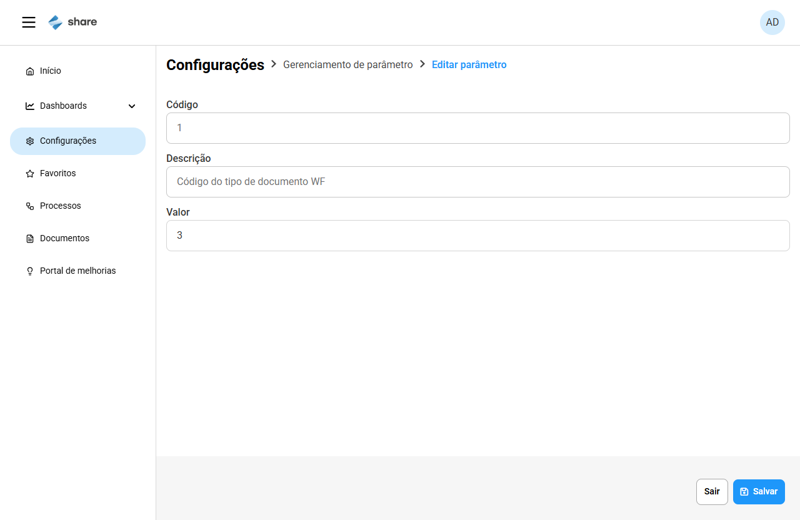
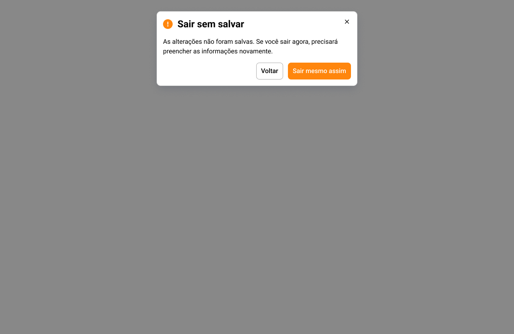
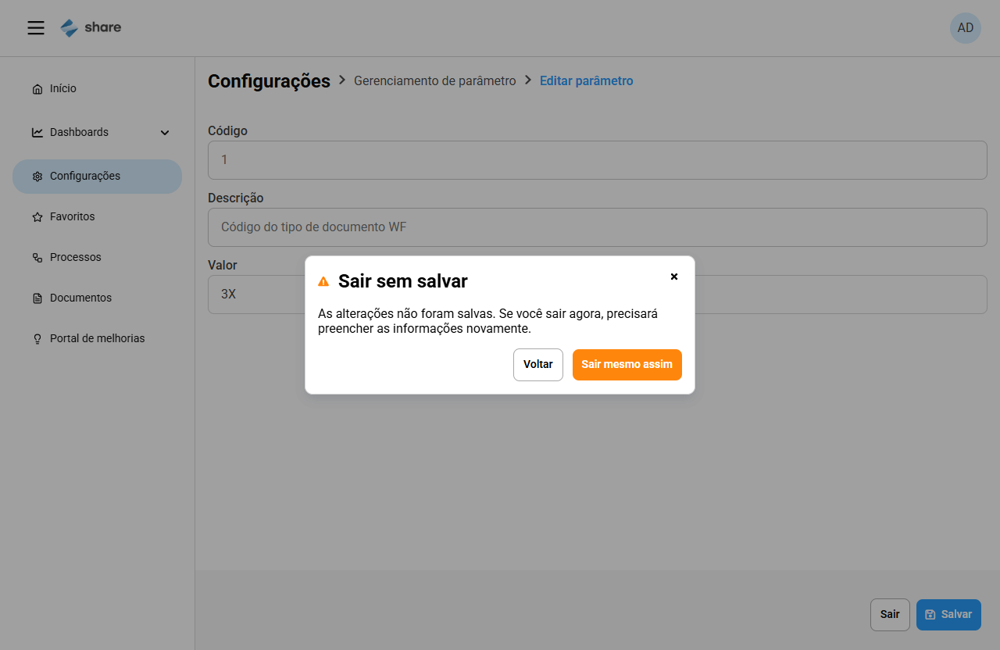

Divergências de protótipo — US #163012 (Gerenciamento de parâmetros, Front-end)
Cenário #20 · mapa #163275 · execução 2026-10-26 · Protótipo: Figma "Gerenciamento de Parâmetros" (página Handoff) × Share 4 em dev (HMG, localhost) · telas na mesma resolução, 1280×832. Itens aguardam validação da PM (CA 40): os validados entram no escopo.
D1Hub: faixa de aviso que não existe no protótipo
O Share 4 mostra a faixa azul "As telas de gerenciamento estão sendo migradas..." entre o título e a busca; o protótipo não tem.


D2Hub: cards e ordem diferentes
O protótipo tem 12 cards (Rotinas do Agent, Mailer, Papel, Perfil, Conexão, Usuário, Notificações, Índices, Tipo de documento, Viewer externo, Parâmetros, Instalador). O Share 4 mostra 7 (Mailer, Papel, Perfil, Conexão, Usuário, Notificação, Parâmetros), em outra ordem. Os cards ausentes são de telas ainda não migradas; a ordem precisa de decisão da PM.
D3Listagem: cores do breadcrumb atual e dos ícones
Item atual do breadcrumb: azul-petróleo escuro no protótipo e azul claro (#2196f3) no Share 4. Ícones de pesquisa e lápis: azuis no protótipo (estado destacado) e pretos no Share 4.


No protótipo também aparecem o "+" da barra, o filtro, os checkboxes, a lixeira e o botão lateral "Novo parâmetro": a US manda ignorar esses frames (sem criar/excluir), então não são divergências.
D4Listagem: rolagem interna no card
No protótipo a tabela mostra suas linhas sem barra de rolagem interna. No Share 4 o card tem altura fixa e rolagem vertical interna (lazy loading, 50 registros por bloco). Provavelmente decorre do lazy loading; PM confirma se o comportamento é aceito.
D5Edição: campo Valor deveria ser multilinha (liga à falha #27)
O protótipo mostra o Valor como área de texto, com a alça de redimensionar no canto inferior direito. No Share 4 é um campo de linha única (<input type="text">); o Enter não quebra linha e as quebras de linha se perdem ao salvar.


Evidência adicional do comportamento em dev: evidencias_2026-10-26/ev-163012-c27-campo-linha-unica.png. Os campos Código/Descrição com erro vermelho no protótipo são do fluxo "Novo parâmetro" (fora do escopo).
D6Modal "Sair sem salvar": ícone, posição e fundo
Ícone de aviso: círculo laranja com "!" no protótipo, triângulo laranja no Share 4. Posição: alinhado ao topo (≈28 px) no protótipo, centralizado verticalmente no Share 4. Fundo: overlay cinza escuro e opaco no protótipo, overlay claro e translúcido (a tela de edição aparece) no Share 4. Textos e botões (Voltar / Sair mesmo assim, X) conferem.


Relacionado, mas é falha funcional (não visual): o Esc não fecha o modal (falha #18; evidência ev-163012-c18-esc-nao-fecha.png).
ConformeItens que batem com o protótipo
| Tela | Item |
|---|---|
| Hub | Título, texto de apoio, campo "Buscar configuração" e card "Gerenciamento de parâmetros" com o mesmo texto |
| Listagem | Colunas Código (ordenável, ícone de ordenação), Descrição e Ações; breadcrumb "Configurações > Gerenciamento de parâmetro" |
| Edição | Rodapé fixo com Sair (contorno) e Salvar (azul, ícone de disquete); Código e Descrição somente leitura |
| Modal | Título, texto, botões Voltar / Sair mesmo assim e X |